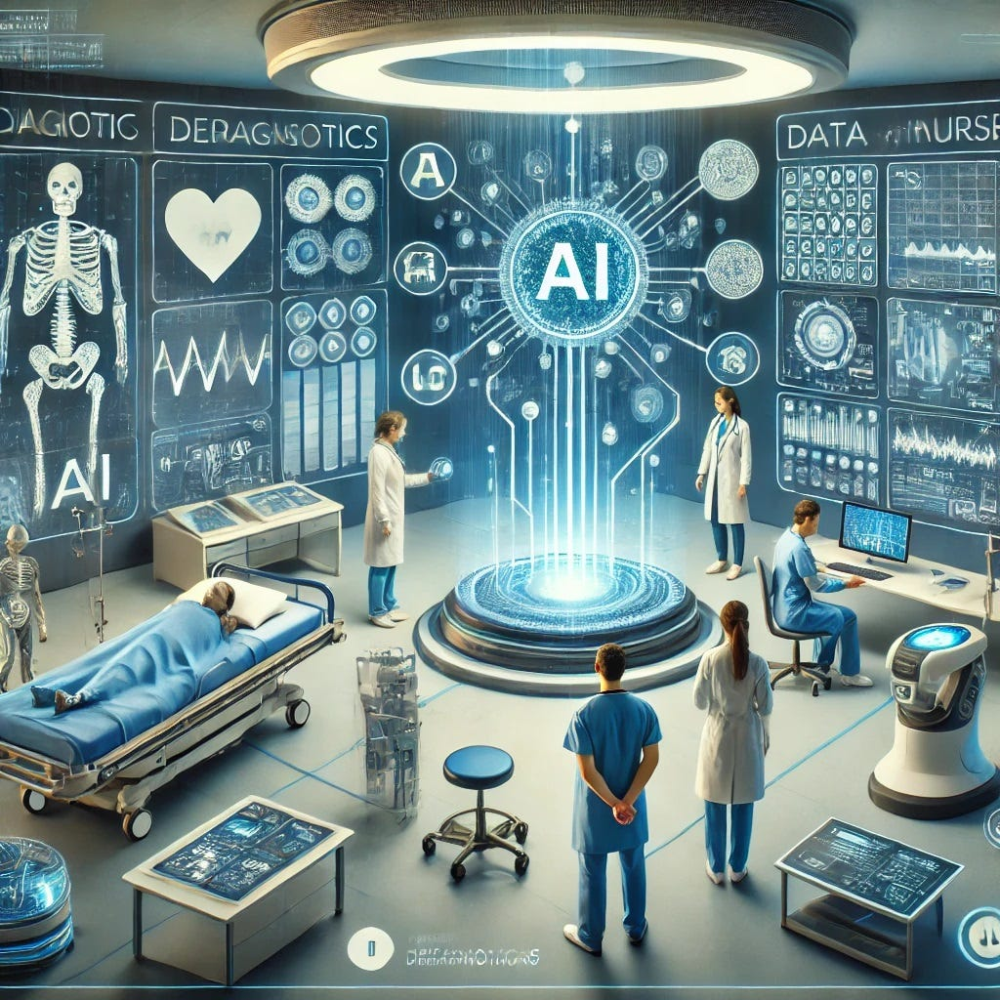

Технологията, която преосмисля медицината
Изкуственият интелект (ИИ) навлиза с все по-бързи темпове в сферата на здравеопазването, трансформирайки начина, по който се поставят диагнози, планират лечения и се грижи за пациентите. От анализ на медицински изображения до персонализирана медицина и управление на болничните процеси — ИИ вече не е само теоретична концепция, а реален инструмент в клиничната практика.
Настоящата разработка разглежда основните понятия, свързани с ИИ в медицината, представя конкретни примери за неговото приложение, анализира предимствата и ограниченията му, и поставя въпроса за отговорното му използване.
Важно: Въпреки впечатляващите възможности на ИИ, той не замества лекаря — а го подпомага. Медицинската отговорност, емпатията и клиничната преценка остават изключително в компетенциите на човека.

Терминология и ключови концепции
За да разберем как ИИ функционира в медицинска среда, е необходимо да познаваме основните понятия, на които се основава тази технология.
Подраздел на ИИ, при който алгоритмите се „учат" от данни, подобрявайки своята точност без изрично програмиране за всяка задача.
Техника на машинното обучение, използваща многослойни невронни мрежи за разпознаване на сложни закономерности в данните — особено ефективна при анализ на изображения.
Технология, позволяваща на компютрите да разбират, интерпретират и генерират човешки език — използва се за анализ на медицинска документация.
Способността на ИИ системите да интерпретират и анализират визуална информация — рентгенови снимки, ЯМР(ядрено-магнитнитен резонанс), патологични препарати.
Подход, при който лечението е адаптирано към индивидуалните характеристики на пациента — генетика, начин на живот и история на заболяването.
ИИ инструменти, които асистират лекарите при вземане на клинични решения, като анализират данни на пациента и препоръчват действия.
ИИ в действие — реални приложения
Изкуственият интелект вече се използва в широк спектър от медицински области. Ето най-значимите и добре документирани приложения:
Анализ на медицински изображения
Системи като Google DeepMind's LYNA и Enlitic анализират рентгенови снимки, МРТ и КТ изображения с точност, сравнима или надхвърляща тази на специалисти-радиолози. При скрининга на рак на гърдата ИИ алгоритми демонстрират с 11,5% по-висока точност спрямо традиционното четене от лекари. FDA е одобрила над 500 медицински ИИ устройства, голяма част от които — именно в радиологията.
Ранна диагностика на рак
ИИ платформата Paige.AI анализира патологични препарати и открива рак на простатата с точност над 98%. Системата IBM Watson Oncology препоръчва лечебни схеми при онкологични заболявания, като сравнява данните на пациента с хиляди научни публикации. Ранното откритие, улеснено от ИИ, значително подобрява преживяемостта.
Разработване на лекарства
По време на пандемията COVID-19 компанията Insilico Medicine идентифицира нови молекули-кандидати само за 46 дни — процес, отнемащ традиционно години. AlphaFold на DeepMind реши проблема с предсказването на протеиновата структура, отваряйки нови хоризонти за таргетна терапия. ИИ намалява разходите за разработка на нови лекарства с до 70%.
Предиктивна кардиология и носими устройства
Apple Watch с алгоритъма на AliveCor открива предсърдно мъждене с точност над 97%. Системата Cardiogram предсказва хипертония и диабет тип 2 чрез анализ на сърдечния ритъм. Носимите ИИ устройства позволяват непрекъснат мониторинг и ранно предупреждение за животозастрашаващи аритмии.
Роботизирана и асистирана хирургия
Системата da Vinci Surgical System, интегрирана с ИИ, е извършила над 10 милиона операции по света. ИИ асистирането намалява тремора, увеличава прецизността и позволява минималноинвазивни интервенции с по-бързо възстановяване. Алгоритмите анализират в реално време хирургичното поле и предупреждават за рискови зони.
Ментално здраве и цифрова терапия
Чат-ботът Woebot предоставя когнитивно-поведенческа терапия на база ИИ и е показал ефективност при лека до умерена депресия. Mindstrong анализира поведенчески модели в смартфона за ранно откриване на депресивни епизоди. Тези инструменти са особено ценни при липса на достъп до специалисти или стигма около психичните заболявания.
Клинична документация и управление
ИИ системите за обработка на естествен език автоматично генерират медицински бележки от гласови записи, спестявайки на лекарите часове административна работа. Платформата Nuance DAX редуцира с до 50% времето за документация. Предиктивните алгоритми оптимизират болничния капацитет и управлението на персонала.
Изкуственият интелект в медицината носи огромен потенциал, но и сериозни предизвикателства, изискващи внимателно осмисляне.
- По-висока точност при диагностициране на определени заболявания в сравнение с конвенционалните методи
- Обработка на огромни масиви от данни за секунди — невъзможно за човешкия мозък
- Непрекъснат мониторинг на пациенти чрез носими устройства 24/7
- Ранно предупреждение за рискови здравни промени, преди да се прояви клинична симптоматика
- Персонализиране на лечението въз основа на генетичен профил и история
- Ускоряване на разработката на нови лекарства с години
- Намаляване на административната тежест за медицинския персонал
- Подобрен достъп до диагностика в региони с недостиг на специалисти
- Предубеждения (bias) в обучителните данни могат да доведат до неравностойно третиране на различни популации
- Липса на „черна кутия" обяснимост — трудно е да се разбере защо алгоритъмът е взел дадено решение
- Правна неяснота — кой носи отговорност при грешка на ИИ: лекарят, болницата или производителят?
- Рискове за поверителността и сигурността на чувствителни здравни данни
- Прекомерна зависимост от технологията може да намали клиничните умения на медиците
- Неравен достъп — богатите болници и страни ще имат предимство
- Необходимост от огромни количества качествени данни за обучение на моделите
Етични и правни отговорности
Използването на ИИ в медицината поражда редица етични въпроси. Информираното съгласие изисква пациентите да бъдат уведомени когато се използват ИИ системи в тяхното лечение. Прозрачността налага алгоритмите да могат да бъдат обяснени и одитирани. Справедливостта изисква ИИ системите да работят еднакво добре за всички пациентски групи, независимо от раса, пол или социален статус.
Европейският съюз прие Закона за изкуствения интелект (AI Act) през 2024 г., класифицирайки медицинските ИИ системи като „висок риск" и изисквайки строг регулаторен контрол, одити и прозрачност преди пускане на пазара.
Бъдещето на медицината е колаборативно
Изкуственият интелект не е просто поредната технологична вълна — той е фундаментална промяна в начина, по който разбираме, диагностицираме и лекуваме заболяванията. Потенциалът му е огромен: от спасяване на животи чрез по-ранна диагностика до демократизиране на достъпа до качествено здравеопазване в развиващите се страни.
Въпреки това, технологията сама по себе си не е достатъчна. Необходими са строги регулаторни рамки, прозрачни алгоритми, добре обучени медицински специалисти и преди всичко — непоколебима ангажираност към правата и достойнството на пациента.
Библиография и референции
-
Artificial Intelligence in Healthcare: Anticipating Challenges to Ethics, Privacy, and Bias
-
High-performance medicine: the convergence of human and artificial intelligence
-
International evaluation of an AI system for breast cancer screening
-
AlphaFold: a solution to a 50-year-old grand challenge in biology
-
Regulation (EU) 2024/1689 — Artificial Intelligence Act
-
Artificial Intelligence in Drug Discovery and Development
-
Machine learning for mental health: opportunities and challenges
-
Ethics and governance of artificial intelligence for health
-
The role of artificial intelligence in achieving the Sustainable Development Goals
-
FDA Artificial Intelligence and Machine Learning (AI/ML) Action Plan